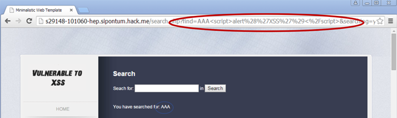

Reflected attacks ocurren cuando el payload maliciosoes llevada dentro de la solicitud del navegador de la victima envia el website vulnerable
Puede ser ejecutado postiando un link en una red social o via una campana de phishing.
Cuando el usuario clickiea el link, empieza el ataque.
El formulario de búsqueda XSS que hemos visto en el ejemplo anterior es una vulnerabilidad reflejada de secuencias de comandos entre sitios.
En ese ejemplo, podríamos crear un enlace a la página de búsqueda y incrustar la carga útil en el parámetro find GET
http://victom.site/search.php?find=<payload>
Estos tipo de ataque se le llaman reflected porque un input del field de HTTP request enviado por el browser es inmediantamente reflejada al output page Algunos browser,como Google Chrome,Tienen XXS filter instalado de fabrica.Siginifica que no va a correr XXS reflected attacks

La realidad es que solo pueden filtrar XSS triviales y conocidos AtaquesHay ataques avanzados que pueden eludir los filtros AntiXSS. ¡Estos filtros no pueden bloquear ataques XSS persistentes!